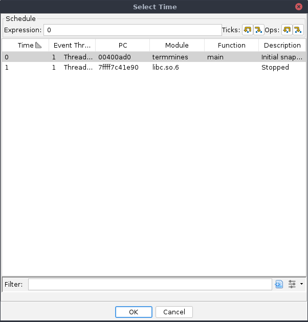
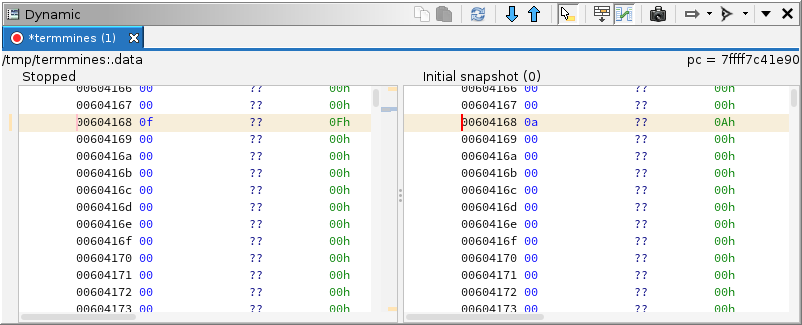

This module assumes you know how to launch termmines in
Ghidra using GDB, and know where to find the basic Debugger GUI
components. It also assumes you are familiar with the concepts of
breakpoints and machine state in Ghidra. If not, please refer to the
previous modules.
This module will address the following features in more depth:
The Threads window
The Stack window
The Time window
Coordinates
The term location is already established in Ghidra to refer
to the current program and current address. There are more elements to a
“location” in a dynamic session, so we add additional elements to form
the concept of your current coordinates. All of these elements
can affect the information displayed in other windows, especially those
dealing with machine state.
The current trace. A trace database is where all of the
Debugger windows (except Targets and Objects) gather their information.
It is the analog of the program database, but for dynamic analysis.
The current thread. A thread is a unit of execution, either
a processor core or a platform-defined virtual thread. Each thread has
its own register context. In Ghidra, this means each has its own
instance of the processor specification’s “register” space.
The current frame. A frame is a call record on the stack.
For example, main may call getc, which may in
turn call read. If you wish to examine the state of
main, you would navigate 2 frames up the stack. Because
functions often save registers to the stack, the back-end debugger may
“unwind” the stack and present the restored registers.
The current time. In general, time refers to the current
snapshot. Whenever the target becomes suspended, Ghidra creates a
snapshot in the current trace. If you wish to examine the machine state
at a previous time, you would navigate to an earlier snapshot. “Time”
may also include steps of emulation, but that is covered in the Emulation module.
In general, there is a window dedicated to navigating each element of
your current coordinates.
Threads
If you do not have an active session already, launch
termmines.
Threads window
The Threads window displays a list of all threads ever observed in
the target. This includes threads which have been terminated.
Unfortunately, termmines is a single-threaded application,
so you will only see one row. If there were more, you could switch to a
different thread by double-clicking it in the table. The columns
are:
The Name column gives the name of the thread. This
may include the back-end debugger’s thread id, the target platform’s
system thread id, and/or the back-end debugger’s display text for the
thread.
The Created column gives the snapshot when the
thread was first observed.
The Destroyed column gives the snapshot when the
thread was first observed as terminated. If this is empty, the thread is
still alive.
The State column gives the state of the thread.
This may be one of ALIVE, RUNNING, STOPPED, TERMINATED, or UNKNOWN.
The Comment column allows you to annotate the
thread, e.g., if you discover it has a dedicated purpose.
The Plot column plots the threads’ life spans in a
chart.
NOTE: Most of the time, switching threads will also
change what thread is being controlled by the Control actions in the
global toolbar. This may vary subtly, depending on the action and the
target. For example, the
Resume button will usually allow all threads to execute; whereas the
Step Into button will
usually step only the current thread. If the target’s thread scheduler
cannot schedule your current thread, the behavior is not clearly
defined: It may step a different thread, it may cause the target to
block until the thread can be scheduled, or it may do something
else.
When you switch threads, everything that depends on the current
thread may change, in particular the Stack window and any machine-state
window that involves register values. The Registers window will display
the values for the new thread, the Watches window will re-evaluate all
expressions, and the Dynamic Listing and Memory views may seek to
different addresses, depending on their location tracking
configurations.
Trace Tabs
The Threads window also has a row of tabs at the very top. This is a
list of open traces, i.e., of targets you are debugging. You can also
open old traces to examine a target’s machine state post
mortem. In general, you should only have one trace open at a time,
but there are use cases where you might have multiple. For example, you
could debug both the client and server of a network application. To
switch to another trace, single-click its tab.
When you switch traces, every Debugger window that depends on the
current trace will update. That’s every window except Targets and
Objects. The Breakpoints window may change slightly, depending on its
configuration, because it is designed to present all breakpoints in the
session.
Stack
Ensure your breakpoint on rand is enabled, and resume
until you hit it.
Stack window
The stack window displays a list of all the frames for the current
thread. Each thread has its own execution stack, so the frame element is
actually dependent on the thread element. The call records are listed
from innermost to outermost. Here, main has called an
unnamed function, which has in turn called rand. The
columns are:
The Level column gives the frame number. This is
the number of calls that must be unwound from the current machine state
to reach the frame.
The PC column gives the address of the next
instruction in that frame. The PC of frame 0 is the value of the PC
register. Then, the PC of frame 1 is the return address of frame 0, and
so on.
The Function column gives the name of the function
containing the PC mapped to its static program database, if
available.
The Comment column allows you to annotate the
frame.
Double-click the row with the unnamed function (frame 1) to switch to
it. When you switch frames, any machine-state window that involves
register values may change. NOTE: Some back-end
debuggers do not recover register values when unwinding stack frames.
For those targets, some windows may display stale meaningless values in
frames other than 0.
Exercise: Name the Function
Your Dynamic and Static Listings should now be in the unknown
function. If you have not already done so, reverse engineer this
function and give it a name.
Time
Re-launch termmines, ensure both of your breakpoints at
srand and rand are enabled, and resume until
you hit rand, then step out. Now, switch to the Time
window.
Time window
It displays a list of all the snapshots for the current trace. In
general, every event generates a snapshot. By default, the most recent
snapshot is at the bottom. The columns are:
The Snap column numbers each snapshot. Other
windows that indicate life spans refer to these numbers.
The Timestamp column gives the time when the
snapshot was created, i.e., the time when the event occurred.
The Event Thread column indicates which thread
caused the target to break. This only applies to snapshots that were
created because of an event, which is most.
The Schedule column describes the snapshot in
relation to another. It typically only applies to emulator / scratch
snapshots, which are covered later in this course.
The Description column describes the event that
generated the snapshot.
Switch to the snapshot where you hit srand (snapshot 2
in our screenshot) by double-clicking it in the table. This will cause
all the machine-state windows to update including the Stack window. If
you try navigating around the Dynamic Listing, you will likely find
stale areas indicated by a grey background.
NOTE: Navigating into the past will automatically
change the Control mode. This is to avoid confusion, since you may
perform a control action based on the state you see, which is no longer
the state of the live target. Switch back by using the Control mode
drop-down button in the global toolbar. When you select Control
Target (with or without edits), the Debugger will navigate
forward to the latest snapshot.
Sparse vs. Full Snapshots
Regarding the stale areas: the Debugger cannot request the back-end
debugger provide machine state from the past. (Integration with timeless
back-end debuggers is not yet supported.) Remember, the trace is used as
a cache, so it will only be populated with the pages and registers that
you observed at the time. Thus, most snapshots are sparse
snapshots. The most straightforward way to capture a full
snapshot is the
Refresh
button with a broad selection in the Dynamic Listing. We give the exact
steps in the next heading. To capture registers, ensure you navigate to
each thread whose registers you want to capture.
Comparing Snapshots
A common technique for finding the address of a variable is to take
and compare snapshots. Ideally, the snapshots are taken when only the
variable you are trying to locate has changed. Depending on the program,
this is not always possible, but the technique can be repeated to rule
out many false positives. The actual variable should show up in the
difference every time.
For example, to find the variable that holds the number of mines, we
can try to compare memory before and after parsing the command-line
arguments. Because parsing happens before waiting for user input, we
will need to launch (not attach) the target.
Launch termmines -M 15 in the Debugger. (See Getting Started to review launching
with custom parameters.)
Ensure your breakpoint at srand is enabled.
Use Ctrl-A to Select All the addresses.
Click the
Refresh
button. NOTE: It is normal for some errors to occur
here. We note a more surgical approach below.
Wait a moment for the capture to finish.
Optionally, press Ctrl-Shift-N to rename the
snapshot so you can easily identify it later. Alternatively, edit the
snapshot’s Description from the table in the Time window.
Press Resume,
expecting it to break at srand.
Capture another full snapshot using Select All and
Refresh.
Click the Compare button in the Dynamic Listing.
In the dialog, select the first snapshot you took.

The compare times dialog
Click OK.
The result is a side-by-side listing of the two snapshots with
differences highlighted in orange. Unlike the Static program comparison
tool, this only highlights differences in byte values. You can
now use the Next and Previous Difference buttons in the Dynamic Listing
to find the variable.

The listing with comparison
Notice that you see the command-line specified value 15 on the left,
and the default value 10 on the right. This confirms we have very likely
found the variable.
NOTE: Using Select All to create your snapshots can
be a bit aggressive. Instead, we might guess the variable is somewhere
in the .data section and narrow our search. For one,
including so much memory increases the prevalence of false positives,
not to mention the wasted time and disk space. Second, many of the pages
in the memory map are not actually committed, leading to tons of errors
trying to capture them all. Granted, there are use cases where a full
snapshot is appropriate. Some alternatives, which we will cover in the
Memory Map module, allow you to zero in
on the .data section:
Use the Memory Map window (borrowed from the CodeBrowser) to
navigate to the .data section. The Dynamic Listing will
stay in sync and consequently capture the contents of the first page.
This specimen has a small enough .data section to fit in a
single page, but that is generally not the case in practice.
Use the Regions window to select the addresses in the
.data section, then click Refresh in the Dynamic Listing.
This will capture the full .data section, no matter how
many pages.
Use the lower pane of the Modules window to select the addresses in
the .data section, then click Refresh in the Dynamic
Listing. This will also capture the full .data
section.
Exercise: Find the Time
In termmines, unlike other Minesweeper clones, your
score is not printed until you win. Your goal is to achieve a remarkable
score by patching a variable right before winning. Considering it is a
single-threaded application, take a moment to think about how your time
might be measured. TIP: Because you will need to play
the game, you will need to attach rather than launch. Use the snapshot
comparison method to locate the variable. Then place an appropriate
breakpoint, win the game, patch the variable, and score 0 seconds!
If you chose a poor breakpoint or have no breakpoint at all, you
should still score better than 3 seconds. Once you know where the
variable is, you can check its XRefs in the Static Listing and devise a
better breakpoint. You have completed this exercise when you can
reliably score 0 seconds for games you win.
NOTE: If you are following and/or adapting this
course using a different specimen, the timing implementation and
threading may be different, but the technique still works.

 Resume button will usually allow all threads to execute; whereas the
Resume button will usually allow all threads to execute; whereas the
 Step Into button will
usually step only the current thread. If the target’s thread scheduler
cannot schedule your current thread, the behavior is not clearly
defined: It may step a different thread, it may cause the target to
block until the thread can be scheduled, or it may do something
else.
Step Into button will
usually step only the current thread. If the target’s thread scheduler
cannot schedule your current thread, the behavior is not clearly
defined: It may step a different thread, it may cause the target to
block until the thread can be scheduled, or it may do something
else.

 Refresh
button with a broad selection in the Dynamic Listing. We give the exact
steps in the next heading. To capture registers, ensure you navigate to
each thread whose registers you want to capture.
Refresh
button with a broad selection in the Dynamic Listing. We give the exact
steps in the next heading. To capture registers, ensure you navigate to
each thread whose registers you want to capture. Compare button in the Dynamic Listing.
Compare button in the Dynamic Listing.